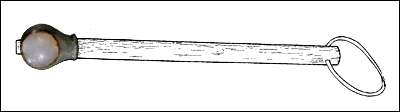
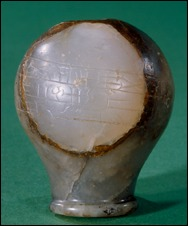

Mace

This mace head is made of marble and it was found at a site in Babylonia. It was broken and repaired in the past. The mace head has been examined under a microscope and the polishing marks (where the fine grains of sand used to produce a smooth finish left little grooves in the surface) show that a fragment was added later. The cuneiform inscription carved around it says that it was dedicated to a god.

|